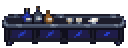
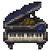
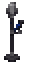

HOLOCRAWL · 고정지형 초안199
네리사 · 레이븐 BAR
남청색 벽과 은빛 테두리의 작은 음악 바입니다. 왼쪽은 병 진열대와 긴 바 카운터, 오른쪽은 피아노와 까마귀 마이크, 앞쪽은 청보라 라운지로 구성했습니다. 가운데 두 칸 길을 따라 각 공간으로 이동할 수 있습니다.
도트 준비 중…
기존 벽에 붙인 배치독립 배치 · 사방 통로
15×13칸 비대칭 방 · 카운터4×2칸 · 피아노2×2칸 · 까마귀 마이크1×2칸 · 입구2칸 양개문. 그림을 누르면2배 정수 배율로 확대됩니다.
신규 도트3종 확대
깃털 무늬 바 카운터
네리사 · 피아노
까마귀 마이크 스탠드
캐릭터 자료와 재구성 범위
네리사 공식 프로필과 공식 캐릭터 그림의 까마귀·검정/푸른 깃털·음악 모티프를 참고했습니다. 원작 시설 목록의 레이븐 BAR를 바탕으로 방과 소품을 우리 게임용으로 재구성한 초안이며, 원작 건물 외형의 정확한 복제는 아닙니다.
시설 미술·배치 검토본입니다. 적·보상·음료 상호작용은 이후 단계입니다. 배치 검사 · 도트 목록